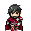
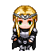
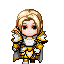
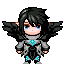
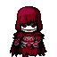
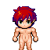
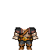

¡Ten tu propio personaje en el juego!







Para ayudar al desarrollo del juego tienes la oportunidad de encargarme un personaje, ya sea inspirado en ti o en una idea tuya. El personaje tendrá el nombre y aspecto que desees y formará parte del juego, aunque la importancia que quieras que tenga en el juego y su historia depende de ti al elegir la comisión.
Esto me ayuda a seguir adelante con el desarrollo e invertir lo ganado en mejorar el juego y la experiencia de los usuarios.
¡Pide tu personaje!Crea tu Personaje

